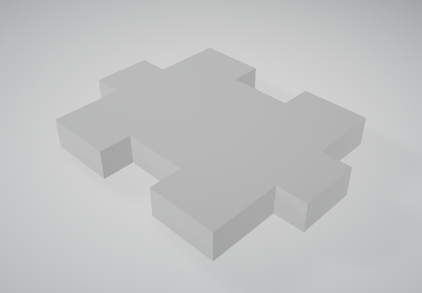
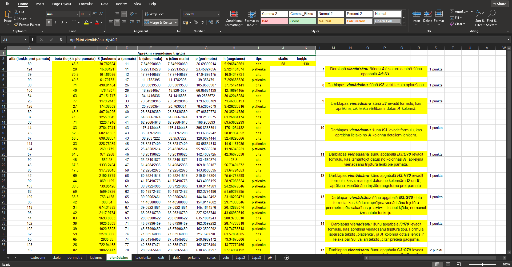
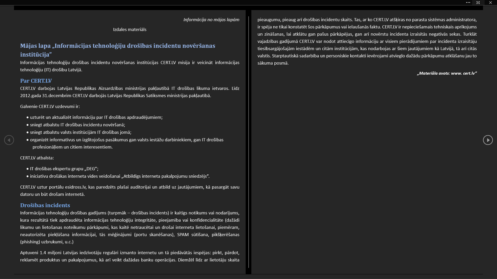

Izveidots baneris par tēmu "2-faktoru autentifikācija" programmā "Inkscape"
Izveidots logo programmā "GIMP"
Izveidota un izprintēta 3D detaļa
Izmantoti dažādi rīki, lai atvieglotu darbu programmā "Excel"
Izmantoti dažādi rīki, lai atvieglotu darbu programmā "Word"
Izmantota programma "CapCut", lai veidotu video montāžu. Apgūtas video apstrādes prasmes